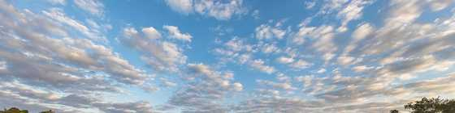
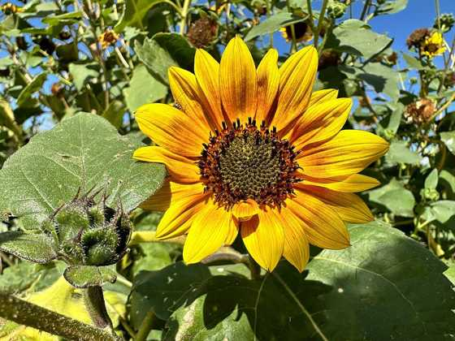
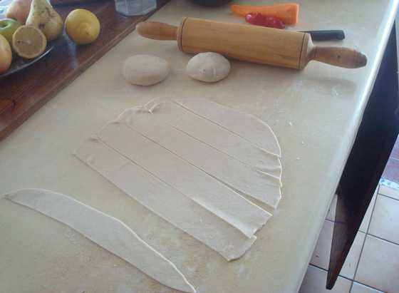
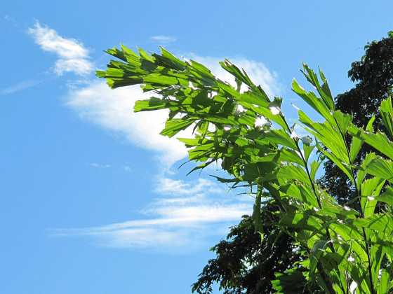
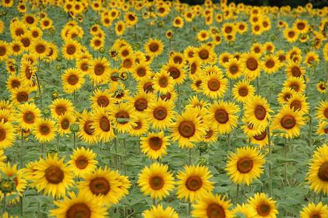
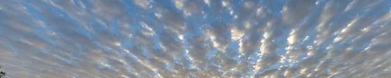

青空と雲:Basile Morin / CC BY-SA 4.0(creativecommons.org)/ Wikimedia Commons
掲載写真はフリー素材のイメージで、実際の店舗・商品ではありません。他地域で撮影されたものや撮影地が不明なものを含みます。
お店の想い
愛媛県今治市大西町の住宅街で、2025年6月に開店したパン屋です。大西町出身のご主人は、50歳を過ぎて「やりたいことがあるなら今しかない」と消防士を辞め、約2年前から独学でパン作りを始めたと報じられています(今治経済新聞)。
パンづくりはご主人お一人で、毎晩仕込み、焼きたてを店頭に並べるスタイル。一度にたくさんは作れないため、売り切れ次第の終了です。
店名は、奥さまの「幼稚園のような、日常になじむ名前にしたかった」という思いから。「近所の人たちに受け入れられる店にしていきたい」という言葉どおり、地域のにぎわいを願う小さなお店です。
※店名の「ひまわり」「空」の意味については確認できていません。このサイトの空とひまわりのデザインは、制作側のイメージです。

ひまわり:Alan Levine / CC0(creativecommons.org)/ Wikimedia Commons

麦の穂:User:Bluemoose / CC BY-SA 3.0(creativecommons.org)/ Wikimedia Commons

パン生地と麺棒:Carlos yo / CC BY-SA 4.0(creativecommons.org)/ Wikimedia Commons

葉と青空:Leoadec / CC BY-SA 3.0(creativecommons.org)/ Wikimedia Commons

ひまわり畑:Björn S. / CC BY-SA 3.0(creativecommons.org)/ Wikimedia Commons
口コミ(イメージ例)
以下は制作側が作成したイメージ例で、実在のお客様の声ではありません。
朝ごはん用にクロワッサンを買いました。外はさくっと、中はしっとり。近所にこんなお店があって嬉しいです。
小さなお店なので、行く時間によっては売り切れていることも。それも焼きたてを大事にしているからだと思います。
子どもと一緒にメロンぱんを選びました。気取らない雰囲気で、普段づかいしやすいパン屋さんです。
アクセス
| 住所 | 〒799-2205 愛媛県今治市大西町宮脇甲73−89 |
|---|---|
| 電話 | 準備中 |
| instagram.com/sorahima6 |

雲の広がる空:Basile Morin / CC BY-SA 4.0(creativecommons.org)/ Wikimedia Commons